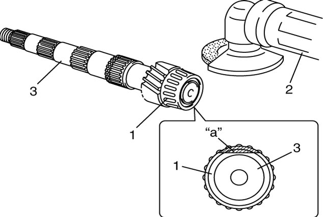

5B
| Countershaft Disassembly and Reassembly |
Using an inappropriate hydraulic press or bearing puller could cause personal injury.
Use the hydraulic press and bearing puller which are capable of safely bearing a load of at least 5 tons (11,000 lbs).
NOTICE:
Supporting the gear on the concave side of the puller can cause damage to the gear.
Support the gear on the flat side of the puller.
Disassembly
1)Remove left bearing cone (2) with 4th gear (3) using puller (4) and hydraulic press.

 "Expand image")
| 1. | Countershaft |
2)Apply puller (5) to 2nd gear (4), and remove 3rd & 4th gear spacer (2) and 3rd gear (3) together with 2nd gear using hydraulic press. Needle bearing would come out with 2nd gear.
 "Expand image")
| 1. | Countershaft |
3)Remove 2nd synchronizer outer ring, center cone and inner ring.
4)Using snap ring pliers (3), remove circlip (1).

 "Expand image")
| 2. | Low speed synchronizer sleeve |
5)Apply puller (3) to 1st gear (2) and remove low speed synchronizer sleeve & hub assembly (1) with 1st gear using hydraulic press.
 "Expand image")
6)Disassemble synchronizer sleeve & hub assembly.
7)Remove 1st gear needle bearing from shaft.
8)To remove right bearing (1) from countershaft, grind with a grinder (2) one part “a” of right bearing (1) as illustrated till it becomes thin.
NOTICE:
The shaft (3) will be damaged if the bearing is ground too much.
Limit the amount of grinding to the minimum amount if necessary.

 "Expand image")
9)Break right bearing (2) at thin point with a chisel (1) to remove it.
 "Expand image")
Reassembly
1)Clean all components thoroughly, check them for any abnormal condition and replace defective parts with new ones if necessary.
2)Check the following items.
•Clearance between synchronizer ring (2) and gear (1)
Clearance “a” between synchronizer ring and gear
Standard: 1.0 – 1.4 mm (0.040 – 0.055 in.)
Limit: 0.5 mm (0.020 in.)
•Key slot width
Key slot width “b”
Standard: 10.0 – 10.2 mm (0.394 – 0.401 in.)
Limit: 10.45 mm (0.4114 in.)
 "Expand image")
•Each chamfered tooth of gear and synchronizer ring for abnormal wear and damage
•Gear tooth for abnormal wear and damage
Replace it with new one if necessary.•Gear tooth for abnormal wear and damage
3)Check the following items.
•Difference between outer ring (1) and inner ring (3)
Difference between synchronizer outer ring and inner ring “a”
Standard: 0.95 – 1.25 mm (0.0375 – 0.0492 in.)
Limit: 0.5 mm (0.0196 in.)
 "Expand image")
| 2. | Center cone |
•Each chamfered tooth of gear and synchronizer ring for abnormal wear and damage
Replace it with new one if necessary.
4)To ensure lubrication of countershaft (1), blow air into oil holes (2) as shown in figure and check that they are free from any obstruction.
 "Expand image")
5)Fit low speed synchronizer sleeve (4) to hub (3), insert 3 keys (2) in it and then set springs (1) at specified position as shown in figure.
NOTE:
•Assemble sleeve and hub in correct direction. (No direction is specified to each key.)
•Sizes of low speed synchronizer keys and springs are larger than sizes of high speed ones and 5th speed ones.
•Sizes of low speed synchronizer keys and springs are larger than sizes of high speed ones and 5th speed ones.
Synchronizer key installation position
“a” = “b”
 "Expand image")
| [a]: | 1st gear side |
6)Install right bearing cone (1) to countershaft (2) using special tools and hydraulic press.
 "Expand image")
7)Install needle bearing (4), apply oil to it, and then install 1st gear (3).
8)Install synchronizer outer ring (2), center cone (6) and inner ring (7).
9)Install low speed sleeve & hub assembly (1) using special tools and hydraulic press.
NOTE:
•Support shaft with special tool as shown in figure so that retainer of bearing cone will be free from compression.
•Check that synchronizer ring key slots are aligned with keys (5) while press-fitting sleeve & hub assembly.
•Check free rotation of 1st gear (3) after press-fitting sleeve & hub assembly.
•Check that synchronizer ring key slots are aligned with keys (5) while press-fitting sleeve & hub assembly.
•Check free rotation of 1st gear (3) after press-fitting sleeve & hub assembly.
 "Expand image")
| [A]: | 1st gear side | B: | Short flange |
| A: | Key slots |
10)Install new circlip (1) to groove securely.
11)Install needle bearing (2) and apply oil to needle bearing.
12)Install 2nd gear (6) with synchronizer outer ring (3), center cone (4) and inner ring (5) as shown in figure.
 "Expand image")
| [A]: | Section [a] – [a] |
13)Press-fit 3rd gear (2) and spacer (1) using special tools and hydraulic press.
NOTE:
It is recommended to press-fit spacer and 3rd gear first, and then 4th gear later separately so that countershaft will not be compressed excessively.
 "Expand image")
| 3. | 2nd gear |
14)Press-fit 4th gear (2) using the same procedure as in Step 11).
15)Install left bearing cone (1) using special tool and hydraulic press.
NOTE:
For protection of bearing cone (3), support shaft with special tool as shown in figure.
 "Expand image")